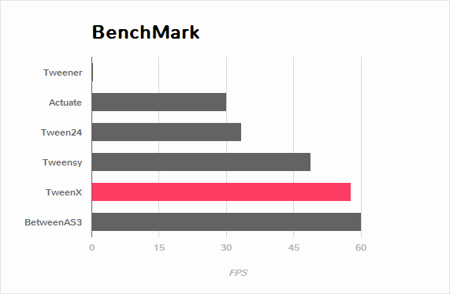

TweenXはクロスプラットフォームで動作する、Haxe向けのトゥイーンライブラリです。Haxe2、Haxe3のどちらからも利用可能で、かつ、Flash、JavaScript、C++、Neko(32bit)ターゲットで動作します。つまり、TweenXはブラウザ上でも、Windows、Mac、Linuxネイティブのソフトウェアでも、iOS、Androidのようなスマートフォンのアプリでも利用可能です。
[Flash版デモ][HTML5版デモ]
機能
TweenXの特徴はクロスプラットフォームだけではありません。トゥイーンをより便利する多くの機能を備えています。
- メソッドチェーンによるパラメータの指定
- 41種類のイージング
- 開始の遅延(delay)
- イベントハンドラの指定
- 繰り返し、ヨーヨー、ジグザグトゥイーン
- 一時停止、逆再生、スロー再生、早送り、ジャンプ
- 関数トゥイーン
- 相対値トゥイーン
- 手動アップデートモード
- トゥイーンのグループ化(直列化、並列化、時間差再生)
- デフォルト値の変更
- RGB、HSVカラートゥイーン
- パラパラアニメーション
- 振動エフェクト
- デバッグモード(-D tweenx_debug)
TweenXはFlashプラットフォームと、それと類似するAPIをもつフレームワーク(NME、OpenFL、CreateJSなど)に最適化して設計されており、動作確認もNMEとOpenFLを使用して行っています。ですが、それ以外の環境であっても基本的な機能は利用可能です。
速度
Flashプラットフォーム上で、15000個のオブジェクトを同時にトゥイーンさせた場合のFPSを測定しました。

この測定では、Tweenerの600倍、Actuateの1.9倍、Tween24の1.7倍、Tweensyの1.2倍程度の速度が記録されました。BetweenAS3にはやや劣るものの、数多くあるトゥイーンライブラリの中ではかなり高速な部類です。
[TweenX]
[Actuate]
[Tween24]
[Tweensy]
[BetweenAS3]
[ソース]
インストール
haxelibを使うことで簡単にTweenXをインストールできます。コンソール上で以下のコマンドを打つだけです。
haxelib install tweenxインストールしたライブラリは、コンパイル時に-lib tweenxフラグを付けることで利用可能になります。
ソースコード
チュートリアル
通常トゥイーン
TweenXを使うことで、オブジェクトの移動をとても簡単に表現することができます。
...
import tweenx909.TweenX;
class Main extends Sprite {
...
public function new() {
...
//squareのx座標を360に移動
TweenX.to( square, {x:360} );
...
}
}
[デモを再生]
to関数は配列を渡すことで複数のオブジェクトを同時に移動させることができます。
//3つのsquareのx座標を360に移動
TweenX.to( [square1, square2, square3], {x:360} );
[デモを再生]
メソッドチェーン
TweenXでは、イージング(ease)、再生時間(time)、遅延時間(delay)などの値をメソッドチェーンよって指定することができます。
...
import tweenx909.TweenX;
import tweenx909.EaseX;
class Main extends Sprite {
...
public function new() {
...
//0.5秒後に、1.2秒かけて、指数的に減速するイージングで、squareのx座標を360に移動
TweenX.to( square, {x:360} ).delay( 0.5 ).time( 1.2 ).ease( EaseX.expoInOut );
...
}
}
トゥイーンライブラリの特徴は、イージングを指定することで簡単にオブジェクトの速度変化を指定することが出来ることです。TweenXで用意している41種類のイージングは以下のサンプルで確認できます。
[イージングのサンプル]using tweenx909.ChainX
トゥイーンの設定をメソッドチェーンで指定できることのメリットは、なんといっても強力な入力補完を受けられるということです。TweenXでメソッドチェーンが使えるのは時間やイージングの指定だけではありません。using tweenx909.ChainX;を宣言することで、トゥイーンの移動先をメソッドチェーンを使って指定できるようになります。
...
import tweenx909.TweenX;
import tweenx909.EaseX;
using tweenx909.ChainX; //トゥイーンの行き先をメソッドチェーンで指定できるようにする。
class Main extends Sprite {
...
public function new() {
...
TweenX.to( square ).x( 360 ).rotation( 360 ).scaleXY( 0, 0 ).delay( 0.5 ).time( 1.2 ).ease( EaseX.expoInOut );
...
}
}
[デモを再生]
ChainXを使うことにより得られる入力補完は、Haxe3を使用している場合はより厳密で強力なものになります。例えば、Pointに対するトゥイーンでは座標(x、y)のみを変化させる関数しか補完されないのにも関わらず、Spriteに対するトゥイーンではそれらに加えて、拡大率(scaleXなど)、透明度など、その他の値に対する関数まで補完されるようになります。
また、ChainXによって補完される関数はFlashターゲットや、OpenFLなどのFlashと類似するAPIを提供する環境に最適化されています。
直列トゥイーン(serial)
TweenX.serial()を使うことで、連続したトゥイーンを簡単に表現できます。
TweenX.serial([ TweenX.to( square1 ).x( 360 ).ease( EaseX.expoOut ), TweenX.to( square2 ).x( 360 ).ease( EaseX.expoOut ), TweenX.to( square3 ).x( 360 ).ease( EaseX.expoOut ), ]);[デモを再生]
並列トゥイーン(parallel)
複数のトゥイーンを同時に再生させるには、TweenX.parallel()を使います。
TweenX.parallel([ TweenX.to( square1 ).x( 360 ).ease( EaseX.expoOut ), TweenX.to( square2 ).x( 360 ).ease( EaseX.expoOut ), TweenX.to( square3 ).x( 360 ).ease( EaseX.expoOut ), ]);[デモを再生]
時間差トゥイーン(lag)
複数のトゥイーンを時間差で再生させるには、TweenX.lag()を使います。
TweenX.lag([ TweenX.to( square1 ).x( 360 ).ease( EaseX.expoOut ), TweenX.to( square2 ).x( 360 ).ease( EaseX.expoOut ), TweenX.to( square3 ).x( 360 ).ease( EaseX.expoOut ), ], 0.1 );[デモを再生]
タイミング調節(waitとskip)
グループ化の際にタイミング調節を行いたい場合は、TweenX.wait()とskip()を使います。
TweenX.serial([ TweenX.to( square1 ).x( 360 ).ease( EaseX.expoOut ), TweenX.to( square2 ).x( 360 ).ease( EaseX.expoOut ), TweenX.wait( 0.3 ), //0.3秒待機 TweenX.to( square3 ).x( 360 ).ease( EaseX.expoOut ).skip(), //このトゥイーンを待たずに次のトゥイーンを開始。 TweenX.to( square4 ).x( 360 ).ease( EaseX.expoOut ), ] );[デモを再生]
繰り返し、ヨーヨー、ジグザグ
同じ動きを何度も繰り返したい場合は、repeat()を使います。さらにzigzag()、yoyo()、interval()の関数によって繰り返しを行った時の挙動を制御することが出来ます。
TweenX.serial([ TweenX.to( square1 ).x( 360 ).time( 0.4 ).ease( EaseX.quartOut ).repeat( 3 ), //同じ動きを3回繰り返し TweenX.to( square2 ).x( 360 ).time( 0.4 ).ease( EaseX.quartOut ).repeat( 5 ).yoyo(), //跳ねるようなトゥイーン TweenX.to( square3 ).x( 360 ).time( 0.4 ).ease( EaseX.quartOut ).repeat( 5 ).zigzag(), //往復するようなトゥイーン ]).repeat().interval( 0.4 ); //0.4秒の間隔をあけて、無限リピート。[デモを再生]
デフォルト値
timeやeaseなどの各設定にはそれぞれのデフォルト値が用意されています。これらは、TweenX.dumpDefaults()で好きなタイミングでデフォルト値を取り出して保存したり、TweenX.setDefaults()でデフォルト値の差し戻しを行ったりが簡単に出来ます。取り出したデフォルト値は、メソッドチェーンで値を変更したり、serial、parallel、lag関数に引数として渡してグループ内のみでのデフォルト値を指定したりできます。
//各動作設定のデフォルト値は以下のとおり TweenX.defaultTime = 0.3; TweenX.defaultEase = EaseX.linear; TweenX.defaultDelay = 0; TweenX.defaultRepeat = 1; TweenX.defaultYoyo = false; TweenX.defaultZigZag = false; TweenX.defaultInterval = 0; //各繰り返しの間隔。 TweenX.defaultAutoPlay = true; //トゥイーンの自動開始 //現在のデフォルトを取得 var defaults:DefaultsX = TweenX.dumpDefaults(); //取得した値の内容を変更する defaults.ease( EaseX.bounceOut ).time( 1 ); //デフォルトを変更 TweenX.setDefaults( defaults ); //デフォルト値を初期状態に戻す。 TweenX.initDefaults(); //直列化したグループにデフォルト値を適用する。 TweenX.serial([ TweenX.to( square ).x( 360 ), TweenX.to( square ).alpha( 0 ), ], defaults );[デモを再生]
イベントの取得
TweenXでは2種類のイベントの取得方法があります。1つは手軽に関数を指定できるon～関数を使う方法です。ただし、on～で指定できるイベントハンドラは1つです。複数のイベントハンドラを指定したい場合には、addEventListenerを使用します。
//on～の関数に、Void->Voidの関数を渡すことで各種イベントを取得出来ます。 TweenX.to( square ).x( 360 ) .onDelay( _delay ); //遅延により値を更新しなかった場合に呼び出される .onHead( _head ); //各リピートの頭で呼び出される .onUpdate( _update ); //値を更新した直後に呼び出される .onFoot( _foot ); //各リピートの末尾に呼び出される .onInterval( _interval ); //リピート間のインターバルにより値が更新しなかった場合に呼び出される .onRepeat( _repeat ); //インターバルが終了して次のリピートが開始される直前に呼び出される .onRest( _rest ); //長さ調節時間により値が更新しなかった場合に呼び出される .onFinish( _finish ); //トゥイーンが正常に終了した場合に呼び出される .onProgress( _progress ); //トゥイーンの再生が進行した時に呼び出される .onPlay( _play ); //再生開始時に呼び出される .onStop( _stop ); //停止時に呼び出される //複数のイベントハンドラを指定したい場合addEventListenerを使います //この場合にイベントハンドラとして渡す関数はTweenX->Voidです .addEventListener( EventX.DELAY, delay ); .addEventListener( EventX.HEAD, head ); .addEventListener( EventX.REPEAT, repeat ); .addEventListener( EventX.FOOT, foot ); .addEventListener( EventX.UPDATE, update ); .addEventListener( EventX.INTERVAL, interval ); .addEventListener( EventX.REST, rest ); .addEventListener( EventX.FINISH, finish ); .addEventListener( EventX.PLAY, play ); .addEventListener( EventX.STOP, stop );
トゥイーン制御(再生、停止、早送り、逆再生)
TweenXでは動画を操作するような感覚で、トゥイーンを停止させたり、途中から再生したり、早送りしたり、巻き戻ししたり、自由に操ることが出来ます。 またTweenXでは、何度の再生をしても同じ開始位置と終了位置で動作が再生されます。つまり、トゥイーンを繰り返し再生することで表示が崩れることはありません。
//停止 tween.stop(); //再生 tween.play(); //指定した再生時間に移動 tween.goto( 0.1 ); //トゥイーンを頭から再生 tween.goto( 0, true ); //現在の再生時間を取得 tween.currentTime; //トゥイーンを最初から最後まで再生するのにかかる時間を取得 tween.totalTime; //再生速度を変更(早送り) tween.timeScale = 8; //再生速度を変更(逆再生) tween.timeScale = -1; //TweenX全体の再生速度を変更する TweenX.topLevelTimeScale = 0.5;[デモを再生]
相対値トゥイーン
移動先を現在地からの相対値で指定する場合は、_～()関数を使います。また、開始位置からの相対値で指定する場合は、__～()関数を使います。
TweenX.serial([ //以下の3つのトゥイーンはすべて同じ挙動になります。 //絶対値によるトゥイーン。 TweenX.serial([ TweenX.to( square ).xy( 360, 0 ), TweenX.to( square ).xy( 360, 360 ), TweenX.to( square ).xy( 0, 360 ), TweenX.to( square ).xy( 0, 0 ), ]), TweenX.wait( 0.5 ), //現在地からの相対値によるトゥイーン TweenX.serial([ TweenX.to( square )._xy( 360, 0 ), TweenX.to( square )._xy( 360, 360 ), TweenX.to( square )._xy( 0, 360 ), TweenX.to( square )._xy( 0, 0 ), ]), TweenX.wait( 0.5 ), //開始位置からの相対値によるトゥイーン TweenX.serial([ TweenX.to( square ).__xy( 360, 0 ), TweenX.to( square ).__xy( 0, 360 ), TweenX.to( square ).__xy( -360, 0 ), TweenX.to( square ).__xy( 0, -360 ), ]), ]).delay( 0.5 );[デモを再生]
関数トゥイーン
トゥイーンをさせながら関数を実行する場合、tweenFunc1()、tweenFunc2()、tweenFunc3()、tweenFunc4()、tweenFunc()のいずれかを使用します。
function draw( x:Float, size:Float ) {
graphics.lineStyle(1, 0x335F73 );
graphics.drawCircle( x, 200, size );
}
TweenX.tweenFunc2( draw, 10, 10, 300, 100 ).time( 0.5 ).ease( EaseX.quadIn );
[デモを再生]
1、2、3、4の数字は変化させるFloatの数に対応しています。Float以外の値をトゥイーンさせたい場合や、トゥイーンさせたい値の数が4つを超える場合にはtweenFunc()関数を使用します。
変則トゥイーン
TweenXでは、Float型の値のトゥイーンの他に、Boolean、Array、RgbX、ArgbX、HsvX、AhsvX、QuakeX、TimelineXの8つの型のトゥイーンをサポートしています。
色(RGB,HSV)トゥイーン
色のトゥイーンはRGB、ARGB、HSV、AHSVに基づくものがあります
function draw( x:Float, y:Float, color:Int ) {
graphics.beginFill( color );
graphics.drawRect( x, y, 8, 40 );
}
TweenX.serial([
TweenX.tweenFunc( draw, [0, 100, RgbX.of( 0x3373EE ) ], [380, 100, RgbX.of( 0xEE7333 ) ] ),
TweenX.tweenFunc( draw, [0, 180, HsvX.of( 0x3373EE ) ], [380, 180, HsvX.of( 0xEE7333 ) ] ),
TweenX.tweenFunc( draw, [0, 260, new HsvX( 0,0.7,0.9 ) ], [380, 260, new HsvX( 2,0.7,0.9 ) ] ),
]);
[デモを再生]
RgbX、ArgbX、HsvX、AhsvX型の値を元にしたトゥイーンでは、0x(AA)RRGGBB形式の整数値(Int)が出力されます。
配列トゥイーン
配列をトゥイーンさせることで、要素それぞれを動かすことができます。ただし、配列はトゥイーン可能な値によって構成されていることが必要です。
var square = new GradientSquare(
[ 0x2C3E50, 0xE74C3C, 0xECF0F1, ],
[ 0, 0.5, 1, ],
[ 0, 64, 255, ]
);
addChild( square );
square.x = square.y = CELL_SIZE * 6;
TweenX.to( square,
{
colors:[ HsvX.of(0x08A689), HsvX.of(0xC7D93D), HsvX.of(0xE9F2A0) ],
alphas:[ 1, 0, 0.5, ],
ratios:[ 0, 192, 255, ]
}).time( 2 ).ease( EaseX.expoInOut ).onUpdate( square.update );
[デモを再生]
Boolean値のトゥイーン
Booleanのトゥイーンではfalseを0、trueを1とみなしてトゥイーンを行い、0以下をfalse、0を超える値をtrueとみなしてBooleanへの再変換がされて出力されます。
振動させる
QuakeX型の値でトゥイーンを行うことで振動させながら値を動かすことが出来ます。
TweenX.from( square, { x:180, y:180 } );
TweenX.to( square, {
//new QuakeX( 目的地, 振動の大きさ, 振動に使うイージング )
x:new QuakeX( 180, 80, EaseX.linear ),
y:new QuakeX( 180, 80, EaseX.linear )
}).time( 2 );
[デモを再生]
トゥイーンによるアニメーション
TimelineXをトゥイーンさせる値として設定することで、連続でない値のトゥイーンが実現できます。例えば、複数のビットマップデータを差し替えることでアニメーションを実現したい場合に使用出来ます。
TweenX.to( bitmap, {bitmapData: new TimelineX( [walk0,walk1,walk2,walk1] )}).time( 1 ).repeat( 0 );
[デモを再生]
TimelineXの第1引数は、BitmapDataに限らずあらゆる値の配列が設定できます。第2引数では各要素に割り当てる時間を指定します。
変則トゥイーンの自作
上記以外のオブジェクトに対するトゥイーンも自作することができます。まず、他の変則トゥイーン(QuakeXクラスなど)を参考にRuleX型の条件を満たす、自作のクラスを作成し、TweenX.addRule関数を使って新しいルールを追加します。
TweenX.addRule( CustomRule );
発展した内容
これ以降の内容は必ずしも知っている必要は無い内容ですが、より安全に、より正確に、より便利にTweenXを使いたい場合には一読しておくと良いでしょう。
手動更新モード
updateModeをMANUALに設定してフレーム毎にmanualUpdateを呼び出しを行うことで、トゥイーンの更新のタイミングを自分で制御することができます。
...
import tweenx909.TweenX;
import tweenx909.advanced.UpdateModeX;
...
class Main extends Sprite {
...
public function new() {
...
TweenX.updateMode = UpdateModeX.MANUAL;
addEventListener( "enterFrame", onFrame );
...
}
function onFrame( e ){
TweenX.manualUpdate( 1/60 ); //全トゥイーンを1/60秒更新。
}
}
トゥイーンの初期化
TweenXでは、再生中に値が変更されることによる再現性の低いバグの発生や、プログラマが意図していない挙動をなくすために、トゥイーンが初期化された後に目的位置や設定を変更することを禁止しています。
トゥイーンの初期化は次のいづれかの内、最も早いタイミングで行われます。
- play、goto、updateの呼び出し時
- トゥイーンが定義された直後のアップデート時
そして、トゥイーンの初期化では以下のことが行われます。
- トゥイーンの開始位置の決定
- 目的位置と各設定値(ease,time,repeat,yoyo,zigzag,intarval,delay)の固定
- autoPlayがtrueに設定されたトゥイーンの開始
トゥイーンが初期化された後に設定や目的位置を変更しようとすれば、実行エラーが発生します。一見、設定や目的位置が変更不能なことはデメリットのようですが、一度定義したトゥイーンが不変であることは大きなメリットをもたらします。TweenXによって定義されたトゥイーンはまるで動画のように振る舞います。つまり、トゥイーンを途中から再生したり、逆再生したり、早送りしたり、時間をおいてからもう一度再生したとしても、トゥイーンが崩れることはありません。
そしてトゥイーンが不変であることのもう一つのメリットが、トゥイーン開始位置の記述です。
開始位置
トゥイーンの開始位置は、基本的には初期化が行われた時のターゲットの値になります。ただし、同一のフレーム内ですでにターゲットが同じトゥイーンが定義されていた場合、そのトゥイーンの続きとして開始位置が設定されます。このため、TweenXでは同じ値を2度記述する必要はありません。もちろんトゥイーンがターゲットの再生時の状態から影響を受けることも無いので、ターゲットの移動について余計な配慮をする必要もありません。
var defaults = TweenX.dumpDefaults(); defaults.time( 1 ).ease( EaseX.quartOut ); TweenX.serial([ //前回のアップデートから現在までに定義されたトゥイーンが存在しないので、トゥイーンが初期化されたときの座標から開始 TweenX.to( square ).x( 360 ).y( 0 ), //次のトゥイーンはx:360、y:0から TweenX.to( square ).x( 360 ).y( 360 ).yoyo().repeat( 2 ), //ヨーヨーにより戻ってくるので、次のトゥイーンはx:360、y:0から TweenX.to( square ).x( 0 ).y( 360 ).zigzag().repeat( 3 ), //次のトゥイーンはx:0、y:360から TweenX.to( square ).x( 0 ).y( 0 ), ], defaults ).repeat();[デモを再生]
この際に注意すべき点は、開始位置は前述のトゥイーン初期化時に決定するということです。トゥイーン開始位置の決定はあくまでトゥイーンを定義した順序に基づいて行われるので、以下のように再生の順序と定義の順序を逆にすると連続でないトゥイーンが生成されます。
TweenX.to( square ).x( 180 ).delay( 2 ); TweenX.to( square ).x( 360 ).delay( 1 );[デモを再生]
また開始位置は、TweenX.from()関数を使って明示的に指定することもできます。
メモリの解放
トゥイーンライブラリの扱う上で、どうすればメモリリークを起こさないかは非常に重要です。TweenXでメモリリークを起こさない方法は簡単です。使わなくなったトゥイーンを停止してください。stopにより停止したトゥイーンは、TweenXのライブラリ内からの参照がないため、ガーベジコレクションの対象になりえます。再生時間の短いトゥイーンであれば、再生終了と同時にstopされます。ただしrepeatを0に指定した無制限の繰り返しトゥイーンや再生時間の長いトゥイーンは、必要が無くなると同時にstopを行ってください。
もうひとつ、メモリリークを起こす要因となるのがupdateModeをMANUALに設定したにも関わらずmanualUpdate呼び出しを行っていない場合です。manualUpdateでは、先述のトゥイーンの初期化が行われるので、manualUpdate呼び出しを行わないと初期化待ちのトゥイーンが大量にたまってしまいメモリリークを引き起こす場合があります。updateModeをMANUALに設定した場合、必ず定期的にmanualUpdateを呼び出してください。
デバッグモード
以下のコンパイラフラグを指定することで、TweenXに関する情報が出力されます。-D tweenx_debug出力される内容は以下のような全トゥイーンの動作に関する情報です。
... Main.hx:171: Tween_20(generated at TweenXPlayer/change()[TweenXPlayer.hx:102]) UPDATE Main.hx:171: Tween_21(generated at TweenXPlayer/change()[TweenXPlayer.hx:98]) UPDATE Main.hx:171: Tween_23(generated at TweenXPlayer/change()[TweenXPlayer.hx:105]) UPDATE Main.hx:171: Tween_24(generated at TweenXPlayer/change()[TweenXPlayer.hx:102]) UPDATE Main.hx:171: Tween_20(generated at TweenXPlayer/change()[TweenXPlayer.hx:102]) UPDATE Main.hx:171: Tween_20(generated at TweenXPlayer/change()[TweenXPlayer.hx:102]) FOOT Main.hx:171: Tween_20(generated at TweenXPlayer/change()[TweenXPlayer.hx:102]) FINISH Main.hx:171: Tween_20(generated at TweenXPlayer/change()[TweenXPlayer.hx:102]) STOP Main.hx:171: Tween_21(generated at TweenXPlayer/change()[TweenXPlayer.hx:98]) UPDATE Main.hx:171: Tween_21(generated at TweenXPlayer/change()[TweenXPlayer.hx:98]) FOOT Main.hx:171: Tween_21(generated at TweenXPlayer/change()[TweenXPlayer.hx:98]) FINISH ...各トゥイーンのupdateに関する情報が要らない場合、以下のように指定します。
-D tweenx_debug -D tweenx_debug_hide_update
グループ化時の注意点
serial、parallel、lag関数は、グループ化の際に内部のトゥイーンのdelayとrestの時間を調節して、すべてのトゥイーンの長さを単一に揃えることで連続的なトゥイーンを実現します。このため、特定のトゥイーンが開始するタイミングを取得したい場合、イベントハンドラを設定するよりも、TweenX.func()関数を使うことが推奨されます。
グループ全体に対するイージングの設定
TweenXでは個別のトゥイーンのみではなく、serial、parallel、lag関数によってグループ化したトゥイーンの全体に対してもイージングを指定することができます。
TweenX.serial([ TweenX.to( square ).time( 0.48 ).x( 120 ), TweenX.to( square ).time( 0.80 ).x( 240 ).y( 260 ), TweenX.to( square ).time( 0.48 ).x( 360 ) ]).ease( EaseX.bounceInOut );[デモを再生]
グループのイージングは明示的に指定しないかぎりEaseX.linearです。重複してイージングが指定されてしまうことを避けるため、デフォルト値の影響は受けません。